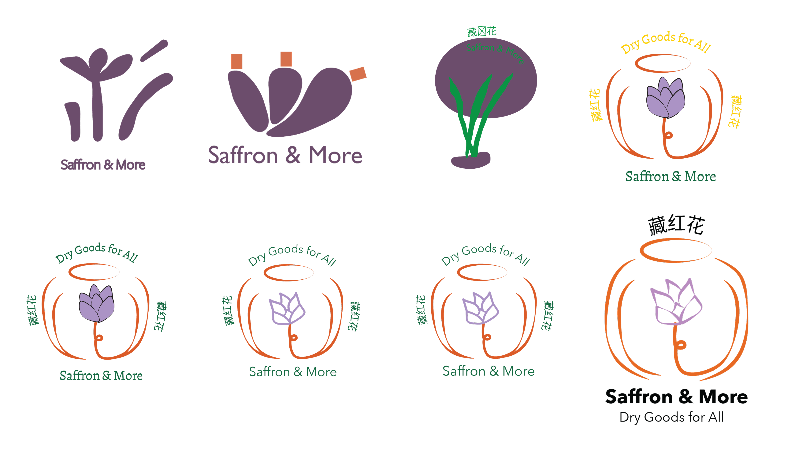
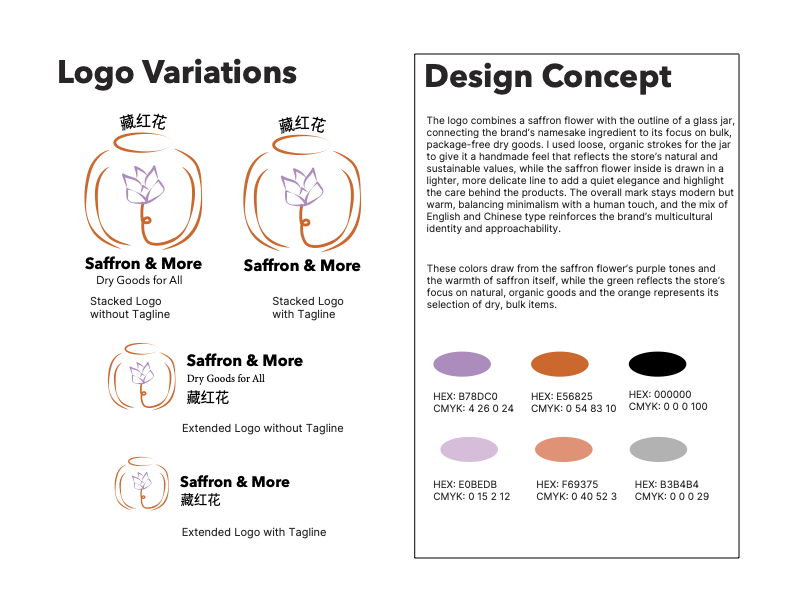
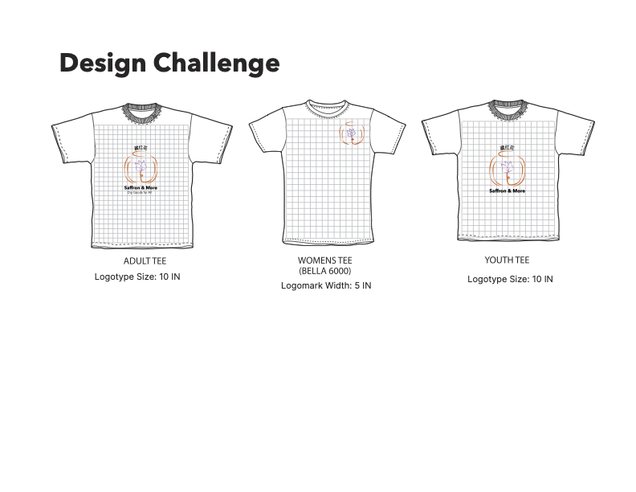
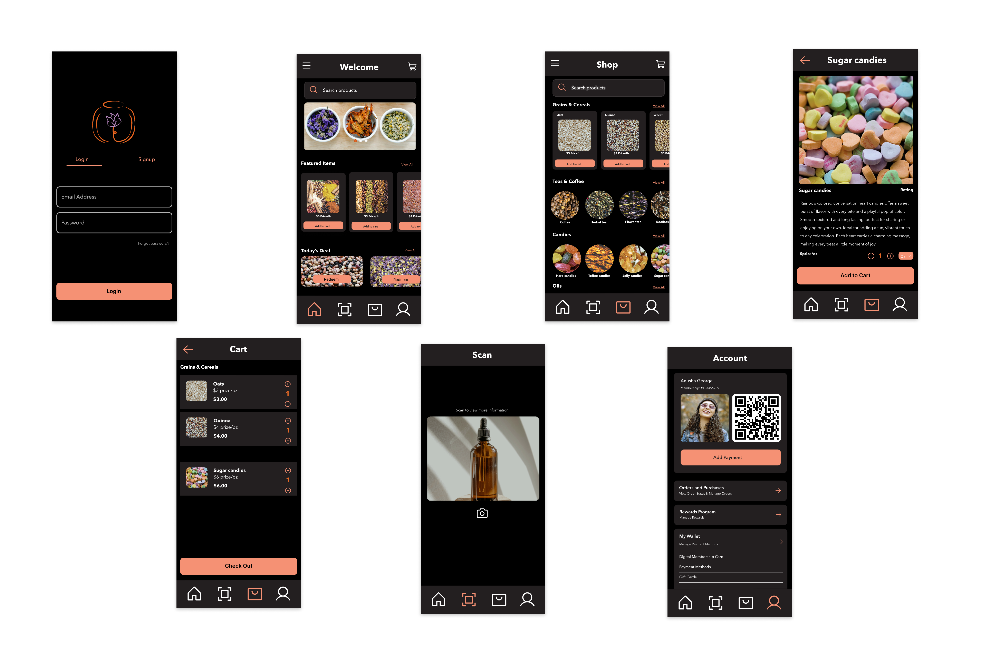

Saffron & More Visual Identity & Wireframe Design
Comprehensive brand identity system and mobile wireframes for a sustainable bulk goods store, featuring bilingual logo design and organic visual language that communicates quality while remaining approachable to all customers.

Project Brief
Developed a comprehensive visual identity system and responsive mobile wireframes for Saffron & More, an Ann Arbor-based bulk goods store specializing in organic spices, nuts, grains, and specialty ingredients. The project encompassed bilingual logo design (English/Chinese), complete brand guidelines, and mobile-first interface design to communicate the store's commitment to sustainable, waste-free shopping.
The Challenge
Create a cohesive visual identity for a new sustainable bulk goods retailer that would resonate with environmentally conscious Ann Arbor residents and University of Michigan students. The brand needed to communicate high-quality, organic products while feeling approachable to customers unfamiliar with bulk shopping practices. A key requirement was developing a bilingual identity incorporating both "Saffron & More" and its Chinese translation "藏红花" (Zàng Hóng Huā).
Client Requirements
- Name: Saffron & More
- Tagline: Dry Goods for All
- Target Audience: Ann Arbor residents and University of Michigan students seeking organic and natural dry goods—environmentally conscious shoppers who prefer sustainable practices and seek convenient, local sources for high-quality specialty ingredients while reducing packaging waste
- Brand Personality: Organic, natural, simple yet elegant, modern, minimalist—conveying high-quality, sustainably sourced products that feel approachable and welcoming to all customers
- Products: Bulk spices, nuts, seeds, grains, legumes, healing herbs, oils, coffee, tea, and candy
Design Process
Discovery & Logo Development
Collaborated with clients Fan and Liam through an iterative design process, beginning with exploration of their visual preferences and brand aspirations. Created multiple logo concepts balancing modern minimalism with organic warmth, testing various approaches to bilingual integration.
Iterative Refinement: Presented initial logo variations to clients, gathered feedback on preferred directions, and refined designs through multiple rounds. The approved logo achieved clean, memorable simplicity while accommodating both English and Chinese typography—versatile enough for packaging, signage, web, print, and merchandise applications.

Logo exploration showing progression from initial concepts to final approved design
Visual Identity System
Natural & Sophisticated Color Palette
Developed an earthy, organic color scheme centered on warm terracotta tones, soft neutrals, and natural accents. The palette evokes the warmth of spices and grains while maintaining the modern elegance the clients sought. Colors were selected for both aesthetic harmony and practical application across packaging, digital interfaces, environmental graphics, and branded merchandise.
Typography & Graphic Elements
Selected typefaces that balance readability with organic character—clean sans-serifs for body text paired with more distinctive display fonts for headers. Established typographic hierarchy and spacing systems to support both English and Chinese text across various contexts.

Complementary color pallette paired with bilingual typography
Brand Guidelines & Merchandise
Created a comprehensive visual identity guide documenting logo usage rules, color specifications, typography systems, graphic patterns, and application examples. The guide demonstrates brand versatility across multiple contexts—from digital interfaces to physical merchandise like apparel—ensuring consistency while showcasing the identity's adaptability.
Merchandise Application: Included hoodie mockups within the brand guidelines to demonstrate how the logo and visual identity translate to apparel. The hoodie design exemplifies the brand's modern, minimalist aesthetic while serving as an example for future team wear or promotional merchandise.

Visual identity guide spread showing merchandise applications including hoodie design
Mobile Wireframe Design
Applying the Visual Identity: Using the provided wireframe structure from the clients, applied the newly developed visual identity system to mobile interfaces. This process involved translating brand guidelines into functional digital design—implementing the color palette, typography hierarchy, and visual elements across the mobile experience.
Design Considerations:
- Color application supporting both readability and brand aesthetic
- Typography system optimized for mobile viewing and bilingual content
- Visual consistency with the organic, minimalist brand personality
- Touch-optimized interface elements reflecting the approachable character
- Integration of sustainable shopping messaging aligned with brand values
The wireframes showcase how Saffron & More's identity translates to digital touchpoints—from homepage navigation to product browsing experiences. The design balances modern minimalism with the warmth and accessibility needed to welcome both experienced bulk shoppers and newcomers.

Mobile wireframes showing brand identity application across homepage, category pages, and product details
Final Deliverables
Produced two comprehensive PDF documents presenting the complete Saffron & More brand system:
Visual Identity Guide
A professionally formatted brand guidelines document including logo variations and usage rules, complete color palette specifications (hex, RGB, CMYK), typography system with font pairings and hierarchy, graphic elements and visual treatments, application examples across multiple contexts, and merchandise mockup demonstrating brand versatility on physical products.
Mobile Wireframes
Complete mobile interface design documentation showcasing brand identity application to provided wireframe structure, color palette implementation across interface elements, typography hierarchy in mobile context, visual design supporting sustainable shopping experience, and bilingual content presentation (English/Chinese).
Visual Identity Guide
Complete brand guidelines including logo usage, color palette, typography, and merchandise applications
Download PDFMobile Wireframes
Mobile interface design showcasing brand identity application across digital touchpoints
Download PDFClick the buttons above to download and view the complete PDF documents at full resolution.
What I Learned
This project deepened my understanding of comprehensive brand system development and the importance of creating flexible visual identities that maintain consistency across both physical and digital applications while accommodating bilingual requirements.
Key Takeaways:
Iterative client collaboration
Working through multiple logo iterations with client feedback refined my ability to interpret preferences, propose design solutions, and guide clients toward decisions that serve both their vision and functional requirements across diverse applications.
Bilingual design considerations
Integrating English and Chinese typography required careful attention to visual balance, legibility at different scales, and cultural appropriateness—considerations that influenced logo structure, typographic hierarchy, and overall brand flexibility.
System thinking in brand design
Creating comprehensive brand guidelines that extend from logo usage to merchandise applications reinforced the importance of documenting design decisions systematically, enabling consistent implementation across touchpoints I didn't directly design.
Translating brand to digital interfaces
Applying the visual identity to mobile wireframes taught me how brand elements like color, typography, and visual tone translate to interactive contexts—balancing aesthetic consistency with usability requirements for touch interfaces and mobile viewing.
Impact
Delivered a complete, professionally documented brand foundation for Saffron & More through two comprehensive PDF deliverables. The visual identity successfully balances modern minimalism with organic warmth, communicating high-quality products while remaining welcoming to all customers regardless of their familiarity with bulk goods shopping. The mobile-first digital experience positions Saffron & More as a contemporary, environmentally conscious alternative to conventional grocery shopping—perfectly aligned with the values of Ann Arbor residents and University of Michigan students seeking sustainable, local sources for specialty ingredients.